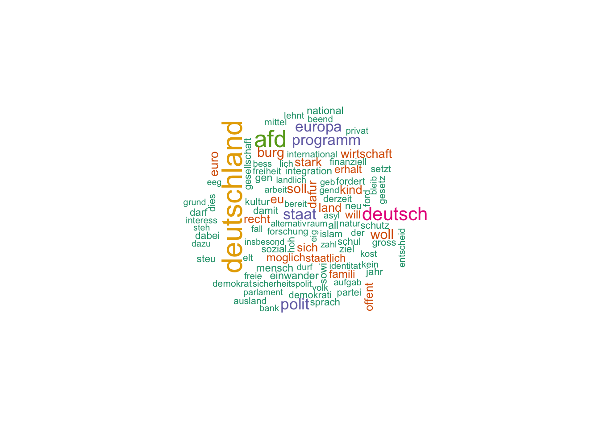

Kapitel 11 Textmining1
Ein großer Teil der zur Verfügung stehenden Daten liegt nicht als braves Zahlenmaterial vor, sondern in “unstrukturierter” Form, z.B. in Form von Texten. Im Gegensatz zur Analyse von numerischen Daten ist die Analyse von Texten weniger verbreitet bisher. In Anbetracht der Menge und der Informationsreichhaltigkeit von Text erscheint die Analyse von Text als vielversprechend.
In gewisser Weise ist das Textmining ein alternative zu klassischen qualitativen Verfahren der Sozialforschung. Geht es in der qualitativen Sozialforschung primär um das Verstehen eines Textes, so kann man für das Textmining ähnliche Ziele formulieren. Allerdings: Das Textmining ist wesentlich schwächer und beschränkter in der Tiefe des Verstehens. Der Computer ist einfach noch wesentlich dümmer als ein Mensch, in dieser Hinsicht. Allerdings ist er auch wesentlich schneller als ein Mensch, was das Lesen betrifft. Daher bietet sich das Textmining für das Lesen großer Textmengen an, in denen eine geringe Informationsdichte vermutet wird. Sozusagen maschinelles Sieben im großen Stil. Da fällt viel durch die Maschen, aber es werden Tonnen von Sand bewegt.
In der Regel wird das Textmining als gemischte Methode verwendet: sowohl qualitative als auch qualitative Aspekte spielen eine Rolle. Damit vermittelt das Textmining auf konstruktive Art und Weise zwischen den manchmal antagonierenden Schulen der qualitativ-idiographischen und der quantitativ-nomothetischen Sichtweise auf die Welt. Man könnte es auch als qualitative Forschung mit moderner Technik bezeichnen - mit den skizzierten Einschränkungen wohlgemerkt.
11.1 Grundbegriffe
Die computergestützte Analyse von Texten speiste (und speist) sich reichhaltig aus Quellen der Linguistik; entsprechende Fachtermini finden Verwendung:
Ein Corpus bezeichnet die Menge der zu analyisierenden Dokumente; das könnten z.B. alle Reden der Bundeskanzlerin Angela Merkel sein oder alle Tweets von “@realDonaldTrump”.
Ein Token (Term) ist ein elementarer Baustein eines Texts, die kleinste Analyseeinheit, häufig ein Wort.
Unter tidy text versteht man einen Dataframe, in dem pro Zeile nur ein Term steht (Silge and Robinson 2016).
11.1.1 Software
Für dieses Kapitel benötigen Sie R, RStudio sowie diese R-Pakete:
install.packages(c("tidytext", "tidyverse", "pdftools", "downloader",
"ggdendro", "okcupiddata", "stringr", "dplyr",
"lsa", "knitr", "SnowballC", "wordcloud"),
# dependencies = TRUE)11.1.2 Grundlegende Analyse: Tidy Text Dataframe erzeugen
Basteln wir uns einen tidy text Dataframe. Wir gehen dabei von einem Vektor mit mehreren Text-Elementen aus, das ist ein realistischer Startpunkt. Unser Text-Vektor2 besteht aus 4 Elementen.
text <- c("Wir haben die Frauen zu Bett gebracht,",
"als die Männer in Frankreich standen.",
"Wir hatten uns das viel schöner gedacht.",
"Wir waren nur Konfirmanden.")Als nächstes machen wir daraus einen Dataframe.
library(dplyr)##
## Attaching package: 'dplyr'## The following objects are masked from 'package:stats':
##
## filter, lag## The following objects are masked from 'package:base':
##
## intersect, setdiff, setequal, uniontext_df <- data_frame(Zeile = 1:4,
text)| Zeile | text |
|---|---|
| 1 | Wir haben die Frauen zu Bett gebracht, |
| 2 | als die Männer in Frankreich standen. |
| 3 | Wir hatten uns das viel schöner gedacht. |
| 4 | Wir waren nur Konfirmanden. |
Und “dehnen” diesen Dataframe zu einem tidy text Dataframe.
library(tidytext)
text_df %>%
unnest_tokens(wort, text)## # A tibble: 24 × 2
## Zeile wort
## <int> <chr>
## 1 1 wir
## 2 1 haben
## 3 1 die
## 4 1 frauen
## 5 1 zu
## 6 1 bett
## 7 1 gebracht
## 8 2 als
## 9 2 die
## 10 2 männer
## # ... with 14 more rowsDas unnest_tokens kann übersetzt werden als “entschachtele” oder “dehne” die Tokens - so dass in jeder Zeile nur noch ein Wort (Token) steht. Die Syntax ist unnest_tokens(Ausgabespalte, Eingabespalte). Nebenbei werden übrigens alle Buchstaben auf Kleinschreibung getrimmt.
Als nächstes filtern wir die Satzzeichen heraus, da die Wörter für die Analyse wichtiger (oder zumindest einfacher) sind.
library(stringr)
text_df %>%
unnest_tokens(wort, text) %>%
filter(str_detect(wort, "[a-z]"))## # A tibble: 24 × 2
## Zeile wort
## <int> <chr>
## 1 1 wir
## 2 1 haben
## 3 1 die
## 4 1 frauen
## 5 1 zu
## 6 1 bett
## 7 1 gebracht
## 8 2 als
## 9 2 die
## 10 2 männer
## # ... with 14 more rows11.1.3 Text-Daten einlesen
Nun lesen wir Text-Daten ein; das können beliebige Daten sein. Eine gewisse Reichhaltigkeit ist von Vorteil. Nehmen wir das Parteiprogramm der Partei AfD3.
library(pdftools)
library(downloader)
afd_url <- "https://www.alternativefuer.de/wp-content/uploads/sites/7/2016/05/2016-06-27_afd-grundsatzprogramm_web-version.pdf"
afd_pfad <- "data/afd_programm.pdf"
afd_file <- download(afd_url, afd_pfad)
afd_raw <- pdf_text(afd_pfad)
afd_raw[3]## [1] "3\t Programm für Deutschland | Inhalt\n 7 | Kultur, Sprache und Identität\t\t\t\t 45 9 | Einwanderung, Integration und Asyl\t\t\t 57\n 7.1 \t\t Deutsche Kultur, Sprache und Identität erhalten\t 47 9.1\t Keine irreguläre Einwanderung über das Asylrecht\t 59\n 7.2 \t\t Deutsche Leitkultur statt Multikulturalismus\t\t 47 9.1.1\t Asylzuwanderung - für einen Paradigmenwechsel\t 59\n 7.3 \t\t Die deutsche Sprache als Zentrum unserer Identität\t 47 9.1.2\t Rückführung - Schluss mit Fehlanreizen und \t\t\t\n 7.4 \t \t Kultur und Kunst von Einflussnahme der Parteien befreien\t 48 \t\t falscher Nachsicht\t\t\t\t\t 60\n 7.5 \t\t Für eine zeitgemäße Medienpolitik: Rundfunkbeitrag abschaffen\t 48 9.2\t Einwanderung aus EU-Staaten\t\t\t\t 61\n 7.6 \t\t Der Islam im Spannungsverhältnis zu unserer Werteordnung\t 48 9.3\t Gesteuerte Einwanderung aus Drittstaaten\t\t 62\n 7.6.1\t\t Der Islam gehört nicht zu Deutschland\t\t\t 49 9.4\t Integration - Mehr als nur Deutsch lernen\t\t 63\n 7.6.2\t\t Kritik am Islam muss erlaubt sein\t\t\t 49 9.5\t Kosten der Einwanderung - Transparenz herstellen\t 63\n 7.6.3\t\t Auslandsfinanzierung von Moscheen beenden\t \t 49 9.6\t Einwandererkriminalität - nichts verschleiern,\n 7.6.4\t\t Keine öffentlich-rechtliche Körperschaft für \t\t nichts verschweigen\t\t\t\t\t 64\n \t\t\t islamische Organisationen\t\t\t\t 50 9.7\t Einbürgerung - Abschluss gelungener Integration\t 65\n 7.6.5\t\t Keine Vollverschleierung im öffentlichen Raum\t 50\n 10 | Wirtschaft, digitale Welt und Verbraucherschutz\t 66\n 8 | Schule, Hochschule und Forschung\t\t\t 51 10.1\t\t Freier Wettbewerb sichert unseren Wohlstand\t\t 67\n 8.1 \t\t Forschung und Lehre: In Freiheit und als Einheit\t 52 10.2 \t\t Soziale Marktwirtschaft statt Planwirtschaft\t\t 67\n 8.1.1\t \t Autonomie durch Grundfinanzierung stärken\t \t 52 10.3 \t\t Internationale Wirtschaftspolitik neu ausrichten\t 67\n 8.1.2\t\t Förderung der “Gender-Forschung” beenden\t\t 52 10.4 \t\t Hohe Standards für Handelsabkommen\t\t 68\n 8.1.3\t\t Diplom, Magister und Staatsexamen wieder einführen\t 52 10.5 \t\t Bürokratie abbauen\t\t\t\t\t 68\n 8.1.4\t\t Studienanforderungen erhöhen\t\t\t 53 10.6 \t\t Den Technologiestandort Deutschland voranbringen\t 68\n 8.2 \t\t Unser Schulsystem: Stark durch Differenzierung\t 53 10.7 \t\t Staatliche Subventionen reduzieren und befristen\t 69\n 8.2.1\t\t Die Einheitsschule führt zu Qualitätsverlust\t\t 53 10.8 \t\t Keine Privatisierung gegen den Willen der Bürger\t 69\n 8.2.2\t\t Wissensvermittlung muss zentrales Anliegen bleiben\t 53 10.9 \t\t Der Mittelstand als Herz unserer Wirtschaftskraft\t 69\n 8.2.3\t\t Leistungsbereitschaft und Disziplin stärken\t\t 54 10.10 \tDigitalisierung als Chance und Herausforderung\t 69\n 8.2.4\t\t Politisch-ideologische Indoktrination darf es an 10.10.1 Quelloffene Software und sichere Hardware\t\t 69\n \t\t\t der Schule nicht geben\t\t\t\t\t 54 10.10.2 Sichere Kommunikation als Standortvorteil\n 8.2.5\t\t Duale berufliche Bildung stärken und erhalten\t \t 54 \t\t und Bürgerrecht\t\t\t\t\t 70\n 8.2.6\t\t Keine Inklusion “um jeden Preis”. Förder- und 10.10.3 Deutsche Literatur im Inland digitalisieren\t\t 70\n \t\t\t Sonderschulen erhalten\t\t\t\t 54 10.11\t\t Verbraucherschutz modernisieren und stärken\t\t 70\n 8.2.7 \t\t Koranschulen schließen. Islamkunde in den 10.11.1 Lebensmittel besser kennzeichnen\t\t\t 71\n \t\t\t Ethikunterricht integrieren\t\t\t\t 55 10.11.2 Langlebige Produkte statt geplante Obsoleszenz\t 71\n 8.2.8 \t Keine Sonderrechte für muslimische Schüler\t\t 55 10.11.3 Textilien und Kinderspielzeug auf Schadstoffe prüfen\t 71\n 8.3 \t\t Nein zu “Gender-Mainstreaming” und 10.11.4 Wasseraufbereitung modernisieren und verbessern\t 71\n \t\t\t Frühsexualisierung\t\t\t\t\t 55\n 8.3.1 \t\t Keine “geschlechterneutrale” Umgestaltung der\n \t\t\t deutschen Sprache\t\t\t\t\t 55\n 8.3.2 \t Geschlechterquoten sind leistungsfeindlich\n \t\t\t und ungerecht\t\t\t\t\t\t 56\n"Der Vektor afd_raw hat 96 Elemente; zählen wir die Gesamtzahl an Wörtern. Dazu wandeln wir den Vektor in einen tidy text Dataframe um. Auch die Stopwörter entfernen wir wieder wie gehabt.
afd_df <- data_frame(Zeile = 1:96,
afd_raw)
afd_df %>%
unnest_tokens(token, afd_raw) %>%
filter(str_detect(token, "[a-z]")) -> afd_df
count(afd_df) ## # A tibble: 1 × 1
## n
## <int>
## 1 26396Eine substanzielle Menge von Text. Was wohl die häufigsten Wörter sind?
11.1.4 Worthäufigkeiten auszählen
afd_df %>%
na.omit() %>% # fehlende Werte löschen
count(token, sort = TRUE)## # A tibble: 7,087 × 2
## token n
## <chr> <int>
## 1 die 1151
## 2 und 1147
## 3 der 870
## 4 zu 435
## 5 für 392
## 6 in 392
## 7 den 271
## 8 von 257
## 9 ist 251
## 10 das 225
## # ... with 7,077 more rowsDie häufigsten Wörter sind inhaltsleere Partikel, Präpositionen, Artikel… Solche sogenannten “Stopwörter” sollten wir besser herausfischen, um zu den inhaltlich tragenden Wörtern zu kommen. Praktischerweise gibt es frei verfügbare Listen von Stopwörtern, z.B. im Paket lsa.
library(lsa)## Loading required package: SnowballC##
## Attaching package: 'lsa'## The following object is masked from 'package:dplyr':
##
## querydata(stopwords_de)
stopwords_de <- data_frame(word = stopwords_de)
stopwords_de <- stopwords_de %>%
rename(token = word)
afd_df %>%
anti_join(stopwords_de) -> afd_df## Joining, by = "token"Unser Datensatz hat jetzt viel weniger Zeilen; wir haben also durch anti_join Zeilen gelöscht (herausgefiltert). Das ist die Funktion von anti_join: Die Zeilen, die in beiden Dataframes vorkommen, werden herausgefiltert. Es verbleiben also nicht “Nicht-Stopwörter” in unserem Dataframe. Damit wird es schon interessanter, welche Wörter häufig sind.
afd_df %>%
count(token, sort = TRUE) -> afd_count
afd_count %>%
top_n(10) %>%
knitr::kable()## Selecting by n| token | n |
|---|---|
| deutschland | 190 |
| afd | 171 |
| programm | 80 |
| wollen | 67 |
| bürger | 57 |
| euro | 55 |
| dafür | 53 |
| eu | 53 |
| deutsche | 47 |
| deutschen | 47 |
Ganz interessant; aber es gibt mehrere Varianten des Themas “deutsch”. Es ist wohl sinnvoller, diese auf den gemeinsamen Wortstamm zurückzuführen und diesen nur einmal zu zählen. Dieses Verfahren nennt man “stemming”.
library(SnowballC)
afd_count_stems <- wordStem(afd_df$token, language = "german")
afd_df %>%
mutate(token_stem = wordStem(.$token, language = "german")) %>%
count(token_stem, sort = TRUE) -> afd_count
afd_count %>%
top_n(10) %>%
knitr::kable()## Selecting by n| token_stem | n |
|---|---|
| deutschland | 219 |
| afd | 171 |
| deutsch | 119 |
| polit | 88 |
| staat | 85 |
| programm | 81 |
| europa | 80 |
| woll | 67 |
| burg | 66 |
| soll | 63 |
Das ist schon informativer. Dem Befehl wordStem füttert man einen Vektor an Wörtern ein und gibt die Sprache an (Default ist Englisch4). Das ist schon alles.
Zum Abschluss noch eine Visualisierung mit einer “Wordcloud” dazu.
library(wordcloud)## Loading required package: methods## Loading required package: RColorBrewerwordcloud(words = afd_count$token_stem, freq = afd_count$n, max.words = 100, scale = c(2,.5), colors=brewer.pal(6, "Dark2"))
Literaturverzeichnis
Silge, Julia, and David Robinson. 2016. “Tidytext: Text Mining and Analysis Using Tidy Data Principles in R.” The Journal of Open Source Software 1 (3). The Open Journal. doi:10.21105/joss.00037.
Dank an Karsten Lübke, dessen Fachkompetenz mir mindestens so geholfen hat wie seine Begeisterung an der Statistik ansteckend ist.↩
Nach dem Gedicht “Jahrgang 1899” von Erich Kästner↩
https://www.alternativefuer.de/wp-content/uploads/sites/7/2016/05/2016-06-27_afd-grundsatzprogramm_web-version.pdf↩